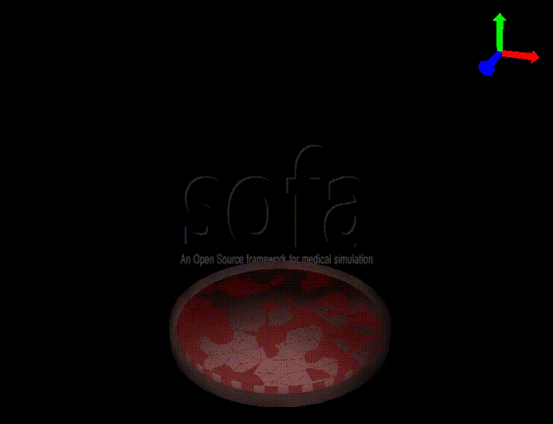
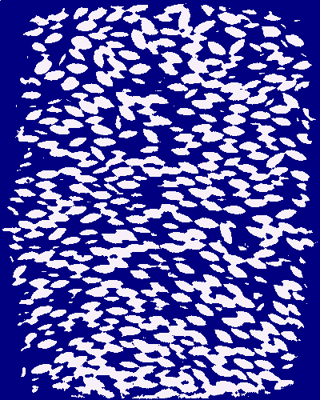
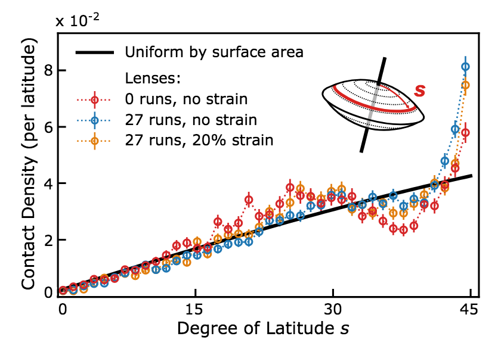
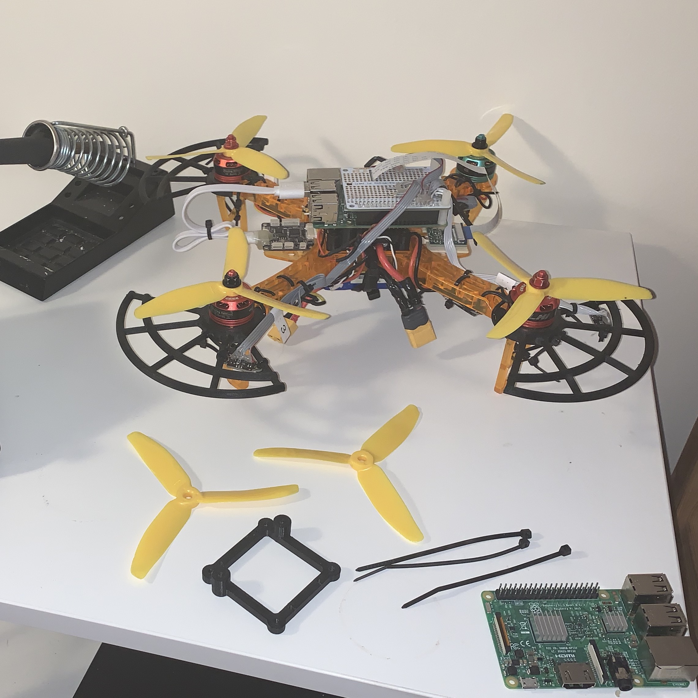

At Toyota Technological Institute at Chicago, I developed tools with Charles Schaff,
Professor Audrey Sedal and
Professor Matthew Walter to jointly optimize the design and control of a soft robot using finite element simulations. We used simulation and reinforcement learning to explore, non-linear design and control spaces. This project can be viewed here.

X-ray tomography reconstruction can give us an excellent view of the mechanical structures within 3D granular packings. Due to the complexities inherent in systems of thousands of particles, granular media remains very difficult to model. At the Jaeger Lab, I developed a method to segment and fit the locations and orientations of convex grains from 3D tomography data. Access to grain by grain position and orientation enabled me to analyze both local and global structures and patterns within packings.
Segmentation and fitting code is available on GitHub.

The shape and surface properties of a granular material determine the response of that material under shear. Using the segmentation method described above, I analyzed patterns in alignment within the bulk of packings as well as the particles’ contact distribution using a physically justified metric. Working with other lab members, I used this analysis to study how particle shape affects wear over time, which in turn affects a packing’s response to shear. This work was published in a paper I co-authored in Granular Matter.
To this work, I contributed the tomography segmentation and fitting software as well as the analysis for the physically justified contacts for lens shaped particles.
The paper can be found at doi.org/10.1007/s10035-019-0913-7.
Publications and Projects
Journal Papers
-
The intertwined roles of particle shape and surface roughness in controlling the shear strength of a granular material
[DOI]
[PDF]
Kieran A. Murphy, Arthur K. MacKeith, Leah K. Roth, and Heinrich M. Jaeger. Granular Matter. 2019.
-
A Buckling-Sheet Ring Oscillator for Autonomous Locomotion
[DOI]
[PDF]
Won-Kyu Lee, Daniel J. Preston, Markus P. Nemitz, Amit Nagarkar, Arthur K. MacKeith, Benjamin Gorissen, Nikolas Vasios, Vanessa Sanchez, Katia Bertoldi, L. Mahadevan, and George M. Whitesides.
Science Robotics. 2022.
Posters
-
Structure in Cylindrical Packings of Convex Particles
[PDF]
Arthur K. MacKeith, Kieran A. Murphy, and Heinrich M. Jaeger. University of Chicago Undergraduate Research Symposium. 2019.
-
Beam-Climbing Robot Controlled by a Soft Ring Oscillator
[PDF]
Arthur K. MacKeith, Won-Kyu Lee, and George M. Whitesides. Harvard University Campus Wide Poster Session. 2019.
Coding Projects
-
Tomography Segmentation and Fitting Library
[About]
[GitHub Link]
-
Docker Container: Sofa Framework for Soft Robotics
[GitHub Link]

Duckietown + Duckiesky
Duckietown is a platform for both education and research. The organization provides low cost robots and open source learning materials to students across the globe, from high schools students new to programming to graduate AI researchers.
DuckieSky is a new initiative lead by Professor Stephanie Tellex at Brown that is bringing drones into Duckietown and bringing Duckietown to high school students.
My contributions to Duckietown are on DuckieSky, where I have developed the drone control stack. I refactored the drone’s control stack to integrate it with Docker and the existing Duckietown communication and management framework. This drone is now being used to educate high school students in an effort to make robotics and STEM more accessible.
In 2020 refactored the control stack, migrating from python 2 to 3, to be rolled out in conjunction with the next generation of Duckiesky hardware.
Other outreach
Physics with a Bang! Holiday lecture and open house.